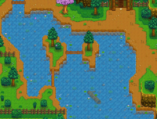
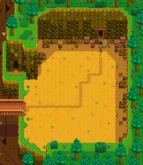

Горы
Перейти к навигации
Перейти к поиску

Горы — это регион, расположенный к северу от города Пеликан. Западный выход из гор ведёт в глушь, через которую можно попасть на ферму. Проход на севере ведёт к железной дороге. В начале игры этот проход закрыт, но на третий день лета после землетрясения он откроется.
Локации в горах
| Вид | Название | Описание | Обитатели |
|---|---|---|---|
 |
Столярная мастерская | На западе карты находится Столярная мастерская, которой работает Робин. Вместе с ней там живут её муж Деметриус и дети Мару и Себастиан. | |
 |
Палатка | Находится к северо-востоку от столярной мастерской. В палатке живёт и проводит почти всё своё время Линус. | |
 |
Горное озеро | Горное озеро расположено в центре карты, перейти его можно только по мостику на севере. В начале игры проход вдоль озера блокирует завал, но через несколько дней его разберут. | |
 |
Шахта | Сразу за озером находится вход в шахту, полную чудовищ. Это основной источник камня и руды. | |
 |
Гильдия искателей приключений | Если пройти мимо шахты вдоль озера, вы придете к гильдии искателей приключений. Там живут Марлон и Гил. Когда вы получите туда доступ, сможете купить там оружие, обувь и кольца, а также продать предметы, собранные от чудовищ. | |
 |
Карьер | За сломанным мостом находится большой карьер, где каждый день появляются новые камни и месторождения. Доступ туда вы получите после завершения всех узелков в комнате искусств в клубе. |
События
| Событие | Даты | Описание |
|---|---|---|
| Сезон морошки | Кусты можно трясти и собирать морошку. | |
| Землетрясение | Открывает проход к железной дороге и бане. | |
| Сезон ежевики | Кусты можно трясти и собирать ежевику. | |
| Ремонт моста в карьер | Завершение всех узелков в комнате искусств. | Доступ к карьеру теперь открыт. |
| Исчезновение блестящего булыжника | Завершение всех узелков в аквариуме. | Булыжник на входе в шахту исчезает, открывается промывание руды. |
| Локации | |
|---|---|
| Локации | Автобусная остановка • Болото ведьмы • Вершина • Вулканическое подземелье • Глушь • Город Пеликан • Горы • Железная дорога • Имбирный остров • Канализация • Карьер • Карьерная шахта • Кладбище • Логово жуков-мутантов • Пепельносмольный лес • Пещера Черепа • Пещера на ферме • Пляж • Пустыня Калико • Тайный лес • Туннель • Ферма • Фермерский пруд • Шахта |